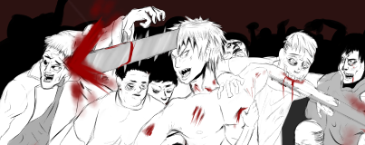

Curriculum Vitae
German Leonardo Rodriguez Contreras
SUMMARY:
8th Semester Student of Systems Engineering at the Fransisco De Paula Santander University, among my hobbies
is programming in languages like node with JavaScript, Java and Spring Framework with Thymeleaf, EFset English
certification with C1 level, among other qualities I am an independent illustrator with a small portfolio of
commissions to illustrate role-playing characters, drummer with 1 year of musical career.

Copyright © AÑO 2021
Autor: German Rodriguez
| Cod: 1151251
| Correo: germanleonardorc@ufps.edu.co
Programación Web-
Madarme.co -
UFPS